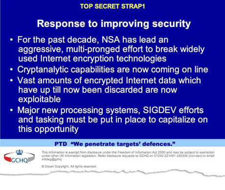
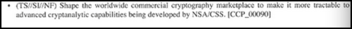

11-12-2014 6:46PM (ET)
“The road to developing this standard was smooth once the journey began, [..] However, beginning the journey was a challenge in finesse.” - NSA memo on backdooring US Cryptographic Standards
The NSA’s thinking on backdoors has never been publicly revealed. In this article using the Whitehouse's own vulnerability disclosure process and informed speculation I will try to understand the NSA's decision to backdoor the US cryptographic standard, known as Dual EC DRBG.
In the early 2000's4 as part of the NSA's project to break and weaken cryptography, known as the BULLRUN program, the agency proposed an algorithm which they had secretly backdoored as an ANSI (American National Standards Institute) standard2. The ANSI standard was then published as a NIST standard. This backdoored algorithm was the Dual Elliptic Curve Deterministic Random Bit Generator or Dual EC DRBG. The backdoor was designed such that it was only usable by someone that had access to a backdoor key but that the existence of this backdoor key was deniable. The idea being that only the NSA would have this backdoor key, giving them an ability to break cryptographic systems that used Dual EC DRBG, while those systems would remain safe from other adversaries. Since no one would know that the NSA had this ability people would continue to use communications systems protected by this technology and the NSA could listen in. For full details of the backdoor anyone interested should read Matthew Green's excellent blog entry The Many Flaws of Dual EC DRBG which I will be drawing heavily from.
After getting Dual EC DRBG standardized the NSA then paid RSA 10 million dollars to make Dual EC DRBG the default option in their BSAFE cryptography library.
Undisclosed until now was that RSA received $10 million in a deal that set the NSA formula as the preferred, or default, method for number generation in the BSafe software, according to two sources familiar with the contract. Although that sum might seem paltry, it represented more than a third of the revenue that the relevant division at RSA had taken in during the entire previous year, securities filings show. - Exclusive: Secret contract tied NSA and security industry pioneer
It is an interesting question as to whether RSA payoff was executed by elements of the NSA that knew BSafe was backdoored, as such an action could constitute a covert action inside the US by an intelligence organisation with a supposedly foreign mandate and a possible crime. It is at least plausible that members of the NSA, unaware of the backdoor, felt that promoting Dual EC DRBG would strengthen the cybersecurity of the US. This is one of those inherent dangers when an actor poisons their supply chain with backdoors. How does the NSA balance keeping the backdoor secret and protecting US Government communication. Tracking all the technologies an organisation as large and diverse at the US government uses seems like an impossible task.

Since none of the NSA's thinking on the Dual EC DRBG has been leaked or published, we are going to use the governments vulnerability disclosure decision making process as a window into how the NSA evaluates risks and benefits trade-offs with regard to backdoors1. The decision making process was published on April 2014, as 'Understanding When We Disclose Cyber Vulnerabilities'3. It was written by Michael Daniel the Special Assistant to the President and Cybersecurity Coordinator, who in both his current role and previous roles has had extensive experience overseeing the intelligence community's cybersecurity operations.
'Understanding When We Disclose Cyber Vulnerabilities' lays out factors or questions to determine the cost and benefits of not disclosing a security vulnerability. We will examine each of these factors as they relate to the Dual EC DRBG backdoor. The statements expressed in response to the questions are my own views on how the NSA might think about an answer.
How much is the vulnerable system used in the core internet infrastructure, in other critical infrastructure systems, in the US economy, and/or in national security systems?
Using standardized cryptography, especially NIST standardized cryptography, is considered best practice throughout the core internet infrastructure, the US commercial ecosystem and the national security systems. Dual EC DRBG has the potential to be used in all of these situations.
Does the vulnerability, if left unpatched, impose significant risk? How much harm could an adversary nation or criminal group do with knowledge of this vulnerability?
To reframe this question in a cryptographic context, does this backdoor impose significant risk? Unlike a software vulnerability, knowledge is not sufficient to exploit. Instead it can only be exploited by parties which have the backdoor key. That is, the risk could have been viewed as the product of two numbers, the damage done if adversaries learned the key and the probability that adversaries would learn the key. The NSA could view the backdoor as low risk if they could keep the key secret6. This despite the enormous damage to US communications security an attacker with the key would do.
Unfortunately as we will discuss below, the backdoor introduced critical security flaws into Dual EC DRBG, making it possible for adversaries to exploit Dual EC DRBG, in a limited fashion, without the key.
An additional risk which the NSA may not have considered is that the very fact that the NSA backdoored a US cryptographic standard could seriously degrade trust in the US Government, ANSI, NIST and US companies. This is exacerbated by the fact that the NSA paid a US company to make this backdoor their default. From a geopolitical context it also creates a precedent for other countries and companies engaging in this sort of tactic harming global and US security10.
How likely is it that we would know if someone else was exploiting it?
It is a passive attack so it is completely undetectable without offensive counterintelligence efforts.
How badly do we need the intelligence we think we can get from exploiting the vulnerability? Are there other ways we can get it?
Not badly, since getting the backdoor supported and deployed would happen over a period of years, suggesting that it was not developed for an immediate intelligence task. On the time scale of years there are always alternative ways to get intelligence. As the backdoor was indiscriminate it is not specific to a particular intelligence target.
Could we utilize the vulnerability for a short period of time before we disclose it?
In fact the longer the backdoor exists, the more systems support it and the more effective it becomes. Disclosure would be counterproductive and would carry high costs to credibility and trust. The Dual EC DRBG was intended as a long term capability.
How likely is it that someone else will discover the vulnerability?
One assumes that the NSA believed that it was unlikely someone would discover the backdoor, as it would be pointless to release the backdoor if it would be quickly discovered (people avoid backdoored crypto). On the other hand the backdoor was so obvious it was noticed shortly after it was proposed as a standard5 and later rediscovered twice by cryptographers7. Not only that but Certicom, the company from whom the NSA licensed the backdoor, published a patent8 for a technique that disables the backdoor used in Dual EC DRBG. This patent explicitly mentions the backdoor.
Can the vulnerability be patched or otherwise mitigated?
The NSA could make a simple modification to Dual EC DRBG on government systems to disable the backdoor. The difficulty would be auditing, finding, and patching all the software that government systems rely on that might use Dual EC DRBG.

The NSA probably concluded that the fact that the backdoor couldn't be exploited without the secret key made it low risk. The NSA's caviler attitude toward involving US standards bodies in its deception campaign suggests that the agency may not have weighed the risk and damage to trust that would occur if the backdoor was discovered, despite the fact that the backdoor was not "well hidden". Could it be that the NSA focused on immediate technical dimensions without strategic and policy considerations?
Designing backdoors into cryptosystems generally weakens them. This is also the case with Dual EC DRBG as Design flaws9 were introduced into Dual EC DRBG for the backdoor to work. Thus, even if the key was not revealed and the backdoor was never discovered, the security of systems that used Dual EC DRBG would still be weakened. I'm not sure what is a scarier possibility, that the NSA knew about these design flaws and released the backdoor anyways, or that the NSA was so sloppy as to not recognize the danger these flaws posed in the first place.
I have covered NSA backdoors before on this blog and discussed a possible design of a secure backdoor.
Using the NSA's vulnerabilities disclosure decision making procedure seems like a good fit for backdoors as well, but a very real possibility exists that the NSA has a completely different doctrine for backdoors. If so, then the conclusions we reach here could be well off the mark. ↩
A NIST backdoor is seems like an "own goal" for the NSA. The NIST standards are intended for US use, especially the US government use. One would think that they were concentrate their efforts on weakening foreign crypto standards rather than US, but we have yet to see any evidence of that. Furthermore using a trusted US company, such as RSA, as the "infection vector" endangers the trust in US companies that the US software export economy is built on. It seems plausible that the primary target of the backdoor could be US commercial communications. ↩
The NSA posted this guide to dispel various rumors that they knew about the heartbleed vulnerability, but choose not to warn the internet community so that they could use the vulnerability offensively. ↩
"A complete history of Dual EC DRBG would begin with NSA's drive to include it in the ANSI X9.82 DRBG standard, with a standardization process kicked off in the early 2000s. The draft ANSI standard includes Dual EC DRBG with all of the known parameters, along with several additional elliptic curve parameters that were not included in the NIST standards." - A few more notes on NSA random number generators ↩
"P and Q can be generated to insert a backdoor. Issue was first raised in an X9 meeting" - John Kelsey slides about the Dual EC standardization process ↩
I am highly suspect of the US Governments ability to protect its key materials given past failures such as John Anthony Walker who gave the Soviet Union the cryptographic keys used by the US navy and manuals allowing them to reconstruct Navy cipher machines. - AN ANALYSIS OF THE SYSTEMIC SECURITY WEAKNESSES OF THE U.S. NAVY FLEET BROADCASTING SYSTEM, 1967-1974, AS EXPLOITED BY CWO JOHN WALKER by Laura J. Heath. ↩
Two different teams of cryptographers independently discovered that Dual EC DRBG could be backdoored: 2006 and 2007. ↩
"An elliptic curve random number generator avoids escrow keys by choosing a point Q on the elliptic curve as verifiably random." - Elliptic curve random number generation ↩
"Due to some quirks in the mathematics of the field operations, an attacker can now predict the next bits of Dual-EC output with a fairly small -- but non-trivial -- success probability, in the range of 0.1%. While this number may seem small to non-cryptographers, it's basically a hanging offense for a cryptographic random number generator where probability of predicting a future bit should be many orders of magnitude lower." - The Many Flaws of Dual_EC_DRBG ↩
This is one of the greatest dangers of this whole episode. If France, Russia, China, Poland, Japan etc all start using their intelligence agencies to insert vulnerabilities into the standards that protect internet communications it will greatly complicate already failing network security efforts. ↩